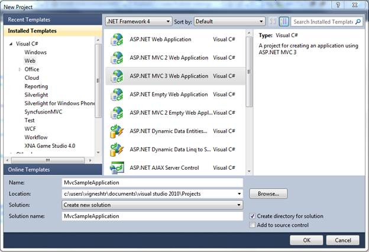
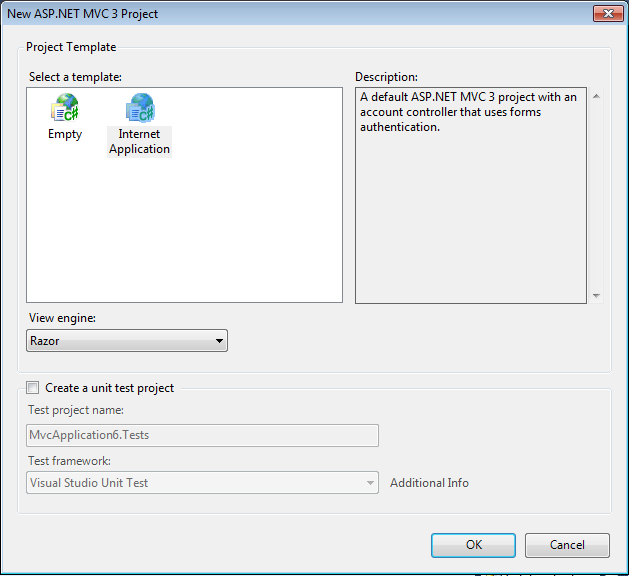
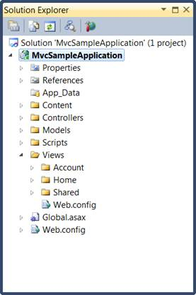
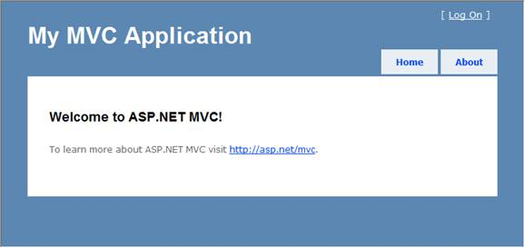

To create a platform razor application:
1. Create a new ASP.NET MVC project.
2. On the File menu, select New Project.
The New Project dialog box is displayed.

Figure 22: New Project Dialog Box
3. On the upper-right corner, select .NET Framework 4.0.
4. In Project types, expand either Visual Basic or Visual C#, and then click Web.
5. In Visual Studio installed templates, select ASP.NET MVC 3 Web Application.
6. In the Name field, enter the MvcSampleApplication.
7. In the Location field, enter a name for the project folder.
8. If you want the name of the solution to differ from the project name, enter a name in the Solution Name field.
9. Select Create directory for solution.
10. Click OK.
The New ASP.NET MVC3 dialog box is displayed.

Figure 23: New ASP.NET MVC3 Dialog Box
11. Select Internet application and then select View engine as Razor..
12. Click OK.
The new MVC3 application project is generated.
The following illustration shows the folder structure of a newly created MVC solution.

Figure 24: Solution Explorer
The folder structure of an MVC project differs from that of an ASP.NET Web site project. The MVC project contains the following folders:
· Content - It
is for content support files. This folder contains the cascading style sheet
(.css file) for the application.
· Controllers
-It is for controller files. This folder contains the application's sample
controllers, which are named AccountController and HomeController.
The AccountController class contains login logic for the application. The
HomeController class contains logic that is called by default when the
application starts.
· Models - It
is for data-model files such as LINQ-to-SQL .dbml files or data-entity
files.
· Javascripts -
It is for script files, such as those that support ASP.NET AJAX and
jQuery.
· Views - It is for view page files. This folder contains three subfolders namely Account, Home, and Shared. The Account folder contains views that are used as UI for logging in and changing passwords. The Home folder contains anIndex view (the default starting page for the application) and an About pageview. The Shared folder contains the master-page (_Layout.cshtml) view for the application.
The newly generated MVC project is a complete application that you can compile and run without any change. The following illustration shows what the application looks like when it runs in a browser.

Figure 25: MVC application output